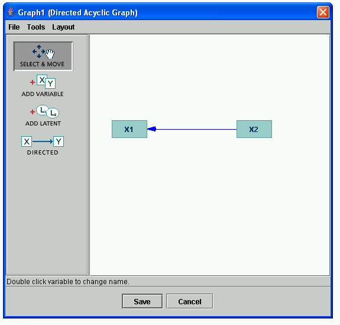
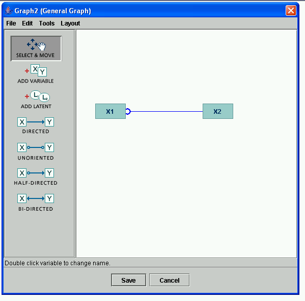

Edge Orientation Shortcuts |
When editing graphs, there are some shortcuts available to make reorienting edges a little easier. For directed acyclic graphs (DAGs), you can change the orientation of an edge by clicking on the tail of the edge; when you do this, the tail will become the head, and vice-versa. For example, in this graph,
if you click on the tail of the edge X1-->X2, that edge will reverse direction:

You can switch it back the other way by clicking on the endpoint near X2; in that case, it will have the orientation of the the original edge once again.
In general, clicking on an endpoint of any edge in a graph will orient that edge as a directed edge in the direction of the endpoint you clicked on. This makes turning, e.g., patterns into DAGs easy.
In graphs that support more types of endpoints, holding down the shift key and clicking on an endpoint cycles that endpoint between the three possible endpoints of a general graph: null (-), arrow (->), and circle (-o). So, for instance, if you copy the above graph into a General Graph model and the click on the endpoint of the edge X1<--X2 near X1, it will first turn into a null endpoint:

then it will turn into a circle endpoint:

and then, if you click one more time, it will turn back into an arrow endpoint: